Учебная практика ПМ.01
Каталог и календарная цена
Разработать десктопное приложение своей области. Реализовать расчёт, подключить окно и подтвердить результат испытаниями.
1. Задание на учебную практику
Результат работы
Разработать десктопное приложение на C# и WPF для каталога назначенной предметной области. Реализовать отдельный программный модуль календарной цены, суммирования остатков и подготовки карточек. Подключить модуль к предоставленному окну. Представить собственный проект, испытания и отчёт.
Исходное состояние
Использовать стартовый проект CatalogDesk и файл catalog.json назначенного варианта. Оболочка окна, чтение JSON, модели данных и обработка файловых ошибок предоставлены. Программный модуль Pricing.cs требуется реализовать. База данных для начала работы не нужна.
Один проект назначенной области
Работать сразу в своём варианте. Область «Линия» служит объяснением метода; создавать второй обязательный проект по этому образцу не требуется. При наличии принятого собственного модуля использовать его и выполнить только отсутствующие функции и проверки.
Границы задания
Реализовать только каталог и расчёт цены. Создание БД, первоначальный импорт в СУБД, регистрация, вход, поиск, сортировка, корзина и оформление заказа в данную работу не входят. Историю заказов использовать как входные данные, без изменения.
1.1. Правила расчёта и отображения
Календарная скидка
Для каждого товара определить, были ли заказы с его кодом в предыдущем календарном месяце относительно выбранной даты расчёта. При наличии хотя бы одного такого заказа оставить базовую цену. При отсутствии применить скидку 25%: итог = базовая цена × 0,75. Заказы других товаров не учитывать.
Граница периода
Начало периода включить, начало текущего месяца исключить. Для 15.01.2027 период равен 01.12.2026–31.12.2026. Заказ 31.12.2026 учитывается; заказ 01.01.2027 не учитывается. Предыдущий месяц не равен последним 30 дням.
Деньги и повтор
Хранить цены в decimal. Итог округлять до двух знаков, середину от нуля: 10,02 × 0,75 = 7,515 → 7,52 руб. Это согласованное правило учебного набора. Передавать контрольную дату параметром; не менять системные часы. Повторный расчёт выполнять от базовой цены, без накопления скидки.
Остатки и карточки
Суммировать количество по всем исполнениям одной модели. Показывать «много» при сумме больше 5, «мало» при сумме 5 и менее. При сумме 3 и менее выделять карточку светло-красным #ff8080. Помимо цвета показывать число и подпись.
Окно приложения
Показать организацию в заголовке, наименование товара, категорию, производителя, материал, базовую и итоговую цену, причину скидки, проверяемый период и общий остаток. Использовать предоставленную картинку-заглушку для товаров без изображения. Использовать Calibri и согласованные цвета #FFFFFF, #D2F6E7, #70B2AF.
1.2. Проверки и сдача
Функциональные проверки
Проверить товар с заказом в прошлом месяце, товар с заказом только в текущем месяце, товар без заказов в прошлом месяце и округление. Проверить даты 01.01.2027 и 01.02.2027, переход февраля високосного года, остатки 3, 4, 5 и 6, пустую историю и повторный расчёт.
Ошибочные данные
Открыть пять предоставленных файлов: отсутствующая дата заказа, отрицательная цена, отрицательный остаток, повторяющийся код товара и заказ отсутствующего товара. После каждого отказа проверить причину сообщения, очистку прежнего каталога и восстановление через исправный файл. Проверить несуществующую дату и пустое поле даты, затем восстановление выбором действительного дня в календаре, включая прежний день. Не показывать старый расчёт как результат неверного ввода.
Состав проекта
Представить исходный проект WPF с Pricing.cs, собственный catalog.json, картинку-заглушку и README с порядком запуска. Не включать в репозиторий bin и obj. Описать в README сигнатуры методов, смысл полей и контрольные примеры для проверки проекта.
Состав отчёта
Включить название и номер области, краткое условие, словарь полей, схему алгоритма, объяснение границ месяца, структуру проекта, таблицу испытаний и снимки реального окна. В таблице указать исходный файл, дату, код товара, действие, ожидаемое значение, фактическое значение и вывод. Разместить доступную проверяющему ссылку на репозиторий непосредственно в отчёте.
Документы практики
Подготовить отчёт и презентацию по шаблонам карточки EatDoners. Приложить индивидуальное задание и аттестационный лист из этой же карточки. Формы не пересоздавать вручную. Сроки и подписантов брать из выданных форм.
2. Файлы для работы
Стартовый проект
Скачать starter.zip: https://olgakraven.github.io/DKIP.YP.PM.01-method/downloads/starter.zip. Распаковать один раз в папку своей практики. В нём находится собираемое окно с незавершённым Pricing.cs. В начале работы появится сообщение о необходимости реализовать модуль.
Данные области
Скачать архив vNN.zip своей области из списка вариантов. Заменить app/Data/catalog.json его файлом catalog.json до реализации. expected.csv содержит контрольные значения для четырёх товаров на 15.01.2027; вывести ожидания самостоятельно и сверить с таблицей.
Ошибочные и граничные случаи
Скачать errors.zip: https://olgakraven.github.io/DKIP.YP.PM.01-method/downloads/errors.zip. Архив содержит только папку data/errors с пятью ошибочными файлами. Ошибочные файлы открывать кнопкой «Открыть данные…» в уже работающем приложении, не подменяя ими исходный исправный набор. Для високосной проверки использовать вход, подробно описанный в этапе 3.9.
Готовый пример для сверки
Скачать reference.zip: https://olgakraven.github.io/DKIP.YP.PM.01-method/downloads/reference.zip. Архив содержит законченное приложение области «Линия». Открыть его исходники для объяснения приёма или сравнения после собственной попытки. Это самостоятельный путь сверки, а не второе обязательное задание.
Формы отчёта
Чистая форма отчёта: https://olgakraven.github.io/DKIP.YP.PM.01-method/downloads/Отчет%20о%20выполнении.docx. Таблица испытаний: https://olgakraven.github.io/DKIP.YP.PM.01-method/downloads/tests-template.csv. Официальные формы документов и презентации получить в карточке EatDoners.
Тестовый проект
Скачать tests.zip: https://olgakraven.github.io/DKIP.YP.PM.01-method/downloads/tests.zip. Это отдельный проект автоматических проверок, без готового Pricing.cs. После собственной реализации распаковать checks в папку рядом с app. Выполнить из этой папки команду, приведённую отдельным блоком ниже. Архив включает data/demo и ошибочные файлы; добавить свой data/vNN/catalog.json из назначенного архива. При успехе последняя строка сообщает число проверок. При ошибке сравнить первое «ожидалось / получено» с собственным ручным расчётом и повторить ту же проверку. Внешние пакеты тестирования не нужны.
Команда тестового проекта
dotnet run --project checks/PricingChecks.csproj -- .
Данные образца
Данные «Линии» входят в стартовый и готовый проекты: app/Data/catalog.json. Свой набор скачивается только отдельным vNN.zip. Архив всех областей для выполнения не нужен.
3. Методические рекомендации: рабочая область
Образец и индивидуальный вариант
Разбор использует магазин «Линия». При выполнении оставить назначенную область из списка: её организацию, товары, коды, цены и исполнения. Не переносить названия и контрольные суммы образца в свой вариант. Общие методы работают с любыми переданными товарами.
Что уже нужно знать
Требуются переменная, условие if, цикл foreach, метод с параметрами и возвращаемым значением. Ниже пояснены используемые модели, JSON, decimal, DateOnly, LINQ и связь WPF с данными. База данных и сетевой сервер не требуются.
Маршрут
1) Подготовить и запустить оболочку. 2) Прочитать данные своей области. 3) Описать алгоритм. 4) Реализовать границы месяца. 5) Реализовать цену. 6) Суммировать остатки. 7) Подготовить карточки и подключить окно. 8) Проверить обычные случаи. 9) Проверить границы, ошибки и повтор. 10) Подготовить сдачу.
3.1. Подготовить и запустить оболочку
Подготовка среды
Использовать Windows и .NET SDK 10. Для работы в Visual Studio установить компонент «Разработка классических приложений .NET» и выбрать проект WPF. Если среда уже настроена, повторная установка не требуется. Проверить в терминале командой dotnet --list-sdks наличие строки 10.0.*. При отсутствии SDK получить установщик .NET 10 SDK для Windows по ссылке в литературе; выбрать архитектуру своего компьютера, установить и открыть терминал заново.
Открытие своего проекта
Распаковать starter.zip в собственную папку без вложенного архива. Скачать vNN.zip по номеру, назначенному преподавателем. Скопировать из него catalog.json с заменой в app/Data. В Visual Studio выбрать «Открыть проект или решение» и открыть app/CatalogDesk.csproj. В обозревателе решения найти Pricing.cs и Data/catalog.json.
Рабочая папка и терминал
В Проводнике создать папку UP01 и открыть её. Включить «Вид → Показать → Расширения имён файлов». Правой кнопкой по starter.zip выбрать «Извлечь всё», открыть извлечённую папку: внутри должны лежать app и README.md. В пустом месте этой папки выбрать «Открыть в Терминале». Команды выполнять здесь, не внутри app. Для копирования JSON открыть vNN.zip, извлечь catalog.json и скопировать в app/Data, подтвердив замену. Если меню терминала отсутствует, открыть PowerShell и выполнить Set-Location -LiteralPath с полным путём этой папки в кавычках.
Первый запуск
В терминале открыть папку, содержащую app, и выполнить команды ниже по одной. В Visual Studio те же действия выполняются командами «Сборка решения» и F5. Первый запуск может потребовать интернет для восстановления компонентов SDK; после восстановления приложение читает локальные данные.
Команды запуска
dotnet build app/CatalogDesk.csproj dotnet run --project app/CatalogDesk.csproj
Проверка этапа
Должно открыться отдельное окно Windows с названием собственной организации, датой и сообщением «Данные загружены. Реализовать методы в Pricing.cs…». Отсутствие карточек в заготовке ожидаемо. Ошибка «Данные не загружены» требует сначала проверить подмену файла своей области.
Первое окно заготовки
Данные уже загружены, но карточек ещё нет: требуется реализовать Pricing.cs. Заголовок и сообщение позволяют отличить заготовку от ошибки чтения JSON.
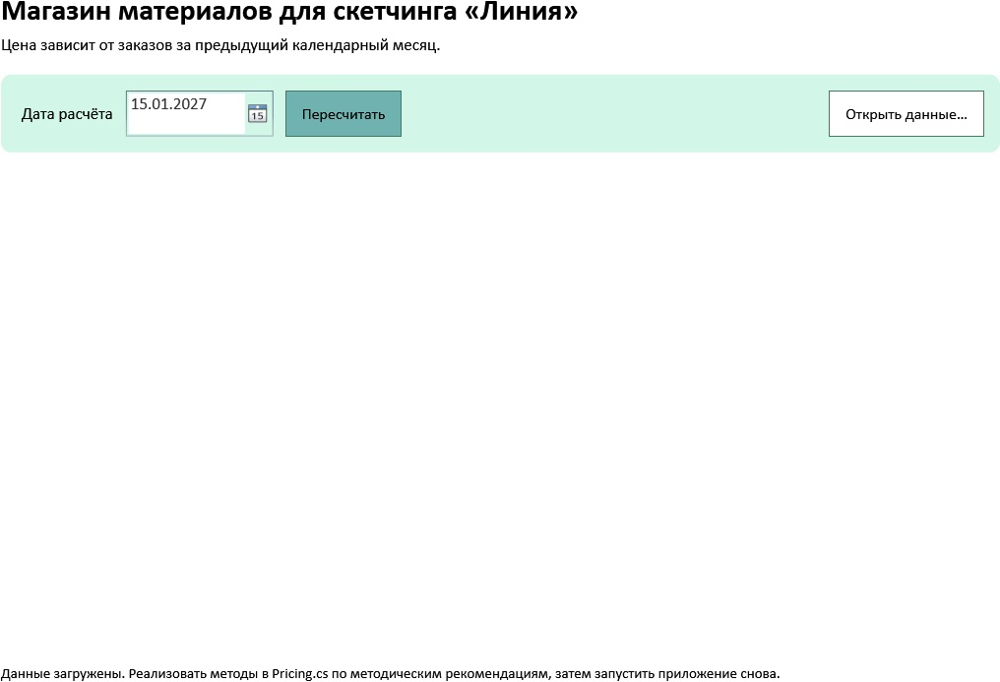
Рисунок 1 — Первое окно заготовки Заготовка в Visual Studio
В правом обозревателе решений дважды нажать Pricing.cs. В центре находятся четыре незавершённых метода с throw new NotImplementedException(). Это места собственной реализации. Кнопка запуска — зелёный треугольник сверху; при первом запуске отсутствие карточек ожидаемо. Перед редактированием закрыть окно каталога.
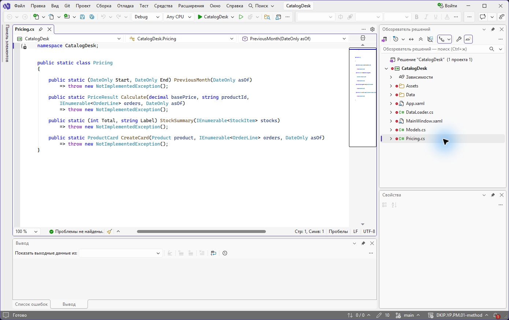
Рисунок 2 — Заготовка в Visual Studio Если проект не собирается
Сообщение «dotnet не является командой» означает отсутствие SDK или старый терминал после установки. Закрыть терминал, открыть заново и выполнить dotnet --list-sdks. Ошибка MSB1009 означает неверную папку или путь проекта: в текущей папке должна быть app/CatalogDesk.csproj. При ошибке C# читать первую строку с error и имя файла; проверить скобки заменённого метода. После каждого исправления повторять dotnet build app/CatalogDesk.csproj.
3.2. Разобрать предметные данные
Смысл объектов
Product — модель товара. StockItem — остаток конкретного исполнения модели: например маркера тонкого и широкого. OrderLine — факт заказа модели на дату; количество не нужно для проверки наличия хотя бы одного заказа. Catalog объединяет организацию, контрольную дату, товары и историю. Один товар связан с несколькими остатками и несколькими фактами заказов через Id/ProductId.
Прочитать предоставленные модели
В Models.cs слово record объявляет запись со свойствами. Например OrderLine(string ProductId, DateOnly Date) задаёт код и дату. Выражение new OrderLine("D00-01", new DateOnly(2026, 12, 31)) создаёт одну запись; аргументы следуют порядку в объявлении. List<OrderLine> хранит несколько таких записей. Модели уже предоставлены: переписывать их второй раз не требуется.
Словарь JSON
organization — название организации; dimension — смысл исполнения; controlDate — дата расчёта yyyy-MM-dd; products — список моделей; id — уникальный код; name/category/manufacturer/material/description — видимые сведения; basePrice — цена в рублях до копеек; stocks[].label — исполнение; stocks[].quantity — целый остаток; orders[].productId — код модели; orders[].date — дата заказа yyyy-MM-dd.
Прочитать собственный набор
Открыть свой app/Data/catalog.json как текст. Найти код первой модели, цену, оба остатка и строки истории с тем же productId. Составить в отчёте строку: модель → исполнения → общий остаток → даты заказов. Для образца D00-01: 1000 руб., остатки 2 и 4, даты 01.12.2026 и 31.12.2026. Для своей области взять значения из её файла.
Проверка этапа
В своей области должны быть четыре модели и четыре строки истории. На 15.01.2027 первая модель имеет декабрьские заказы, вторая — только январский, третья — только ноябрьский, четвёртая — ни одного. Отличие структуры сначала исправить по исходному архиву; случайное изменение истории меняет ожидаемые ответы.
3.3. Описать алгоритм до кода
Вход и выход
Для Calculate определить входы: базовая цена decimal, код модели string, список фактов заказов IEnumerable<OrderLine>, дата расчёта DateOnly. Выход PriceResult содержит итог, признак скидки и границы проверенного периода. decimal хранит десятичные деньги; суффикс m в 0.75m делает литерал десятичным. DateOnly хранит день без часового пояса и времени.
Прочитать запись методов
public позволяет вызвать метод из окна, static — вызвать его через имя класса Pricing без создания объекта. return передаёт результат вызывающему коду. Пара (DateOnly Start, DateOnly End) возвращает два именованных значения; var (start, end) раскладывает пару по переменным. Запись o => условие задаёт проверку одного элемента o для метода Any; s => s.Quantity выбирает количество для Sum. throw прерывает неверный расчёт исключением, которое оболочка переводит в сообщение.
Алгоритм
1) Проверить цену и код. 2) Найти первый день текущего месяца. 3) Вычесть один календарный месяц. 4) Проверить существование заказа с этим кодом в полуинтервале [начало прошлого месяца; начало текущего). 5) Выбрать множитель 1 или 0,75. 6) Округлить итог. 7) Вернуть новый результат. Историю и базовую цену не изменять.
Ручной расчёт образца
На 15.01.2027 для D00-01 есть декабрьский заказ: 1000 × 1 = 1000 руб. Для D00-02 есть только заказ 01.01.2027: 1200 × 0,75 = 900 руб. Для D00-03 ноябрьский заказ за пределами декабря: 1100 × 0,75 = 825 руб. Для D00-04 без истории: 10,02 × 0,75 = 7,515 → 7,52 руб.
Проверка этапа
До запуска рассчитать ответы четырёх собственных моделей и сравнить с expected.csv своей области. Если ответ отличается, проверить код модели и месяц заказа, затем цену и округление. Не переписывать в колонку ожидания результат работающей программы.
3.4. Реализовать границы месяца
Место изменения
Закрыть работающее окно. В своём Pricing.cs выделить весь метод PreviousMonth, включая сигнатуру и строку с throw, и заменить его целиком блоком ниже. Не вставлять второй метод рядом с первым. Сохранить namespace CatalogDesk и внешние скобки класса Pricing. Остальные методы пока оставить незавершёнными.
Как работает DateOnly
new DateOnly(asOf.Year, asOf.Month, 1) создаёт первый день текущего месяца. AddMonths(-1) переводит его в первый день предыдущего месяца, включая переход января к декабрю прошлого года. Возвращаемая пара Start/End задаёт нижнюю включённую и верхнюю исключённую границу. Январь первого года отвергается: предыдущего месяца в допустимом диапазоне нет.
Код метода
public static (DateOnly Start, DateOnly End) PreviousMonth(DateOnly asOf) { if (asOf.Year == 1 && asOf.Month == 1) throw new ArgumentOutOfRangeException(nameof(asOf), "Нет предыдущего месяца для января первого года."); var end = new DateOnly(asOf.Year, asOf.Month, 1); return (end.AddMonths(-1), end); }Проверка этапа
Для 01.01.2027 получить Start=01.12.2026, End=01.01.2027. Для 01.03.2028 получить Start=01.02.2028, End=01.03.2028. Верхняя граница не входит в проверяемые заказы. Проверить сборку; полный запуск расчёта возможен после реализации всех методов.
3.5. Реализовать календарную цену
Место изменения
В том же Pricing.cs заменить целиком незавершённый метод Calculate приведённым ниже методом. Сохранить уже реализованный PreviousMonth. Полный файл состоит из одного namespace, одного класса и четырёх методов; блок Calculate вставить внутри класса, рядом с PreviousMonth.
Поиск факта заказа
Метод Any возвращает true при первом элементе, удовлетворяющем условию. Условие объединяет три проверки через &&: совпал код, дата не раньше начала периода, дата раньше его конца. Это не поиск максимальной даты и не проверка наличия любых заказов. foreach с флагом может выразить тот же алгоритм; одновременно оба способа реализовывать не требуется.
Результат и округление
При hasOrders=true множитель равен 1m. Иначе он равен 0.75m. Math.Round(..., 2, MidpointRounding.AwayFromZero) задаёт правило копеек явно. Аргументы проверяются до расчёта: отрицательная цена и пустой код должны дать понятный отказ, а не неверную скидку.
Реализация Calculate
public static PriceResult Calculate(decimal basePrice, string productId, IEnumerable<OrderLine> orders, DateOnly asOf) { if (basePrice < 0) throw new ArgumentOutOfRangeException(nameof(basePrice)); if (string.IsNullOrWhiteSpace(productId)) throw new ArgumentException("Не указан код товара.", nameof(productId)); ArgumentNullException.ThrowIfNull(orders); var (start, end) = PreviousMonth(asOf); bool hasOrders = orders.Any(o => o.ProductId == productId && o.Date >= start && o.Date < end); decimal factor = hasOrders ? 1m : 0.75m; decimal price = Math.Round(basePrice * factor, 2, MidpointRounding.AwayFromZero); return new PriceResult(price, !hasOrders, start, end); }Перенос на область
Алгоритм не должен содержать строки D00-01, названия товаров или фиксированную дату 15.01.2027. Эти значения поступают из параметров. Реализовать метод один раз, затем использовать его для всех четырёх товаров.
Проверка этапа
На 15.01.2027 для образца ожидаются 1000; 900; 825; 7,52 руб. Для собственной области ожидаемые цены взять из своего ручного расчёта. При повторе те же входы дают те же цены.
3.6. Реализовать суммарный остаток
Место изменения
В своём Pricing.cs заменить целиком заготовку StockSummary кодом этого этапа. Сохранить методы предыдущих этапов. Не изменять MainWindow.xaml и DataLoader.cs для вычисления остатка.
Предметный смысл
Исполнения относятся к одной модели. Для маркера с остатками 2 и 4 общее количество равно 6. При 6 показывать «много»; при 5, 4 и 3 — «мало». Красная подсветка имеет другой порог: 3 и менее. Нельзя заменить оба правила одной проверкой quantity < 5.
Работа со списком
ToArray материализует вход для нескольких проходов. Any ищет отрицательное количество. Sum складывает Quantity всех элементов. Пустой список даёт 0. Тернарный оператор условие ? значение1 : значение2 выбирает подпись. Это действие выполняется над каждой моделью, без объединения остатков разных товаров.
Код StockSummary
public static (int Total, string Label) StockSummary(IEnumerable<StockItem> stocks) { ArgumentNullException.ThrowIfNull(stocks); var items = stocks.ToArray(); if (items.Any(s => s.Quantity < 0)) throw new ArgumentException("Остаток не может быть отрицательным."); int total = items.Sum(s => s.Quantity); return (total, total > 5 ? "много" : "мало"); }Проверка этапа
У четырёх моделей своего файла должны получиться 6, 5, 4 и 3. Ожидаемые подписи: много, мало, мало, мало. Только последняя карточка подсвечивается. Отрицательные значения нельзя прибавлять к положительным и считать исправным остатком.
3.7. Подготовить карточки и связать с окном
Место изменения
В своём Pricing.cs заменить целиком заготовку CreateCard кодом этого этапа. Теперь реализованы все четыре метода. Сохранить файл и собрать весь проект; отдельно запускать фрагменты методов не требуется.
От вычисления к изображению
CreateCard вызывает Calculate и StockSummary для одной модели и формирует ProductCard. Новый объект отделяет исходные данные от вычисленного представления. Основные сведения копируются из Product, а цена, период и остатки добавляются из результатов методов. Для отображения включённого последнего дня используется End.AddDays(-1).
Код CreateCard
public static ProductCard CreateCard(Product product, IEnumerable<OrderLine> orders, DateOnly asOf) { var result = Calculate(product.BasePrice, product.Id, orders, asOf); var stock = StockSummary(product.Stocks); return new ProductCard(product.Id, product.Name, product.Category, product.Manufacturer, product.Material, product.Description, product.BasePrice, result.Price, result.DiscountApplied, stock.Total, stock.Label, $"{result.PeriodStart:dd.MM.yyyy}–{result.PeriodEnd.AddDays(-1):dd.MM.yyyy}", result.DiscountApplied ? "Заказов за прошлый месяц нет: скидка 25%." : "Есть заказ за прошлый месяц: базовая цена."); }Что делает предоставленная оболочка
В MainWindow.xaml.cs метод RefreshCards берёт CalculationDate.SelectedDate, преобразует её в DateOnly, вызывает CreateCard для всех моделей и присваивает список ProductList.ItemsSource. LINQ Select преобразует каждый элемент в новый; ToList создаёт список для окна. MainWindow.xaml содержит привязки Binding Card.Name, Card.Price и других свойств через CardView. Повторять этот код в каждом обработчике кнопки не требуется.
Проверка связи
Сохранить Pricing.cs, собрать и запустить собственный проект. Должны появиться четыре карточки собственной области. Изменить дату на 01.02.2027: январский заказ второй модели теперь отключает её скидку. Вернуть 15.01.2027: цены должны восстановиться. Если карточки не появились, сначала прочитать нижнее сообщение, затем первую ошибку сборки.
Смена календарного месяца
Смена месяца: на 01.02.2027 у «Линии» первая цена 750,00, вторая 1200,00; период — январь. Сравнить с исходным декабрём.
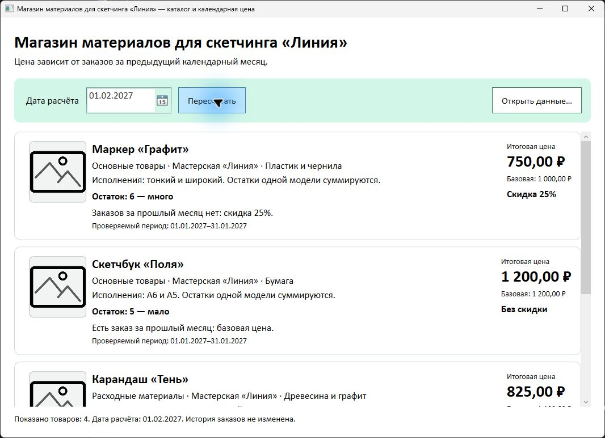
Рисунок 3 — Смена календарного месяца Готовая связь методов
В Pricing.cs метод CreateCard вызывает Calculate и StockSummary и возвращает ProductCard. После внесения всех четырёх методов сохранить Ctrl+S, выбрать «Сборка → Собрать решение» и запустить F5. Внизу Visual Studio проверять сообщение об успешной сборке; ошибки исправлять до запуска.
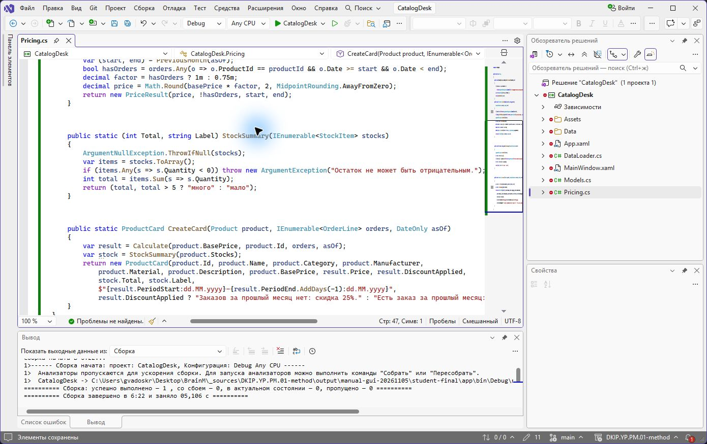
Рисунок 4 — Готовая связь методов
3.8. Проверить окно и обычные случаи
Данные и внешний вид
Сверить заголовок организации, имена четырёх моделей, производителя и материал со своим JSON. Сверить картинку-заглушку: файл Assets/picture.png копируется проектом в каталог запуска. В учебных наборах товарные фотографии отсутствуют; для всех карточек используется заглушка. Цвета и Calibri уже заданы в оболочке.
Окно образца
Показан запущенный образец «Линия» на 15.01.2027. Первая карточка имеет базовую цену 1000 руб., вторая — цену со скидкой 900 руб. У собственного варианта отличаются организация, товары и суммы.
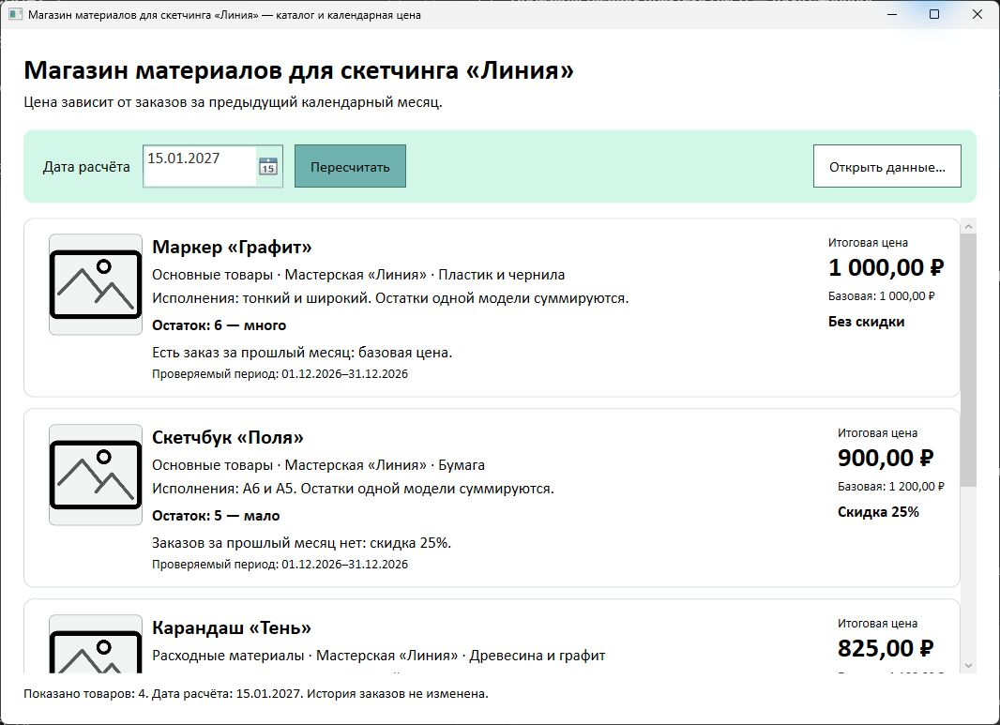
Рисунок 5 — Окно образца Испытания каталога
На 15.01.2027 сверить итоговые цены с expected.csv. Для каждой строки указать код товара, декабрьские факты истории и причину наличия или отсутствия скидки. Сверить сумму двух исполнений. В отдельные строки отчёта записать остатки 3, 4, 5 и 6 с ожидаемой подписью и подсветкой.
Управление
Нажатием Tab последовательно перейти к дате и кнопкам. Выбрать дату календарём или ввести ДД.ММ.ГГГГ, затем нажать «Пересчитать». Уменьшить окно до минимального размера и прокрутить каталог вниз. Убедиться, что последняя карточка и строка состояния доступны, а цены и причины читаются.
Доказательство
Сохранить снимок собственного окна с верхними карточками, отдельный снимок карточки с остатком 3 и таблицу проверок. Снимок готового примера не подтверждает работу собственного варианта.
Нижние карточки и остаток 3
Прокрутка вниз показывает остаток 3 и цену 7,52. Одна красная карточка не заменяет проверку порогов 4, 5 и 6.
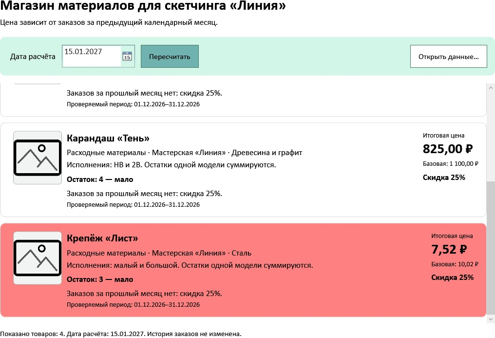
Рисунок 6 — Нижние карточки и остаток 3 Минимальное окно
Окно варианта 07 уменьшено до минимального размера. Сведения переносятся на новые строки, последняя карточка и строка состояния доступны. Прокрутить список мышью до конца; проверить свой вариант в таком же размере.
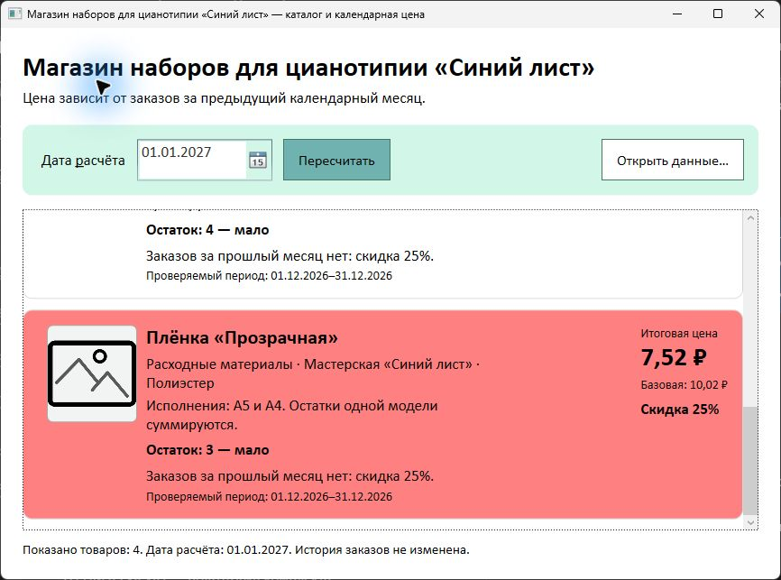
Рисунок 7 — Минимальное окно
3.9. Проверить границы, ошибки и повтор
Открыть другой файл
В работающем окне нажать «Открыть данные…». В поле «Имя файла» стандартного диалога ввести полный путь нужного JSON, затем нажать «Открыть». Для исправного набора это app/Data/catalog.json своего проекта; для ошибки — data/errors/missing-date.json из извлечённого errors.zip. Кнопка «Отмена» оставляет текущий набор. На снимке показано место ввода пути; на компьютере использовать свою папку.
Диалог выбора данных
Поле «Имя файла» задаёт конкретный JSON. Сначала проверить путь и имя, затем открыть файл.
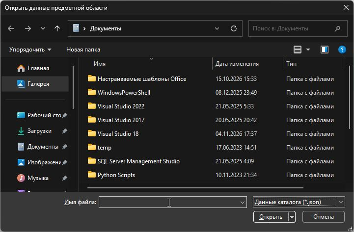
Рисунок 8 — Диалог выбора данных Начало года и текущий месяц
Изменить дату на 01.01.2027. Первая модель с заказом 31.12.2026 остаётся без скидки; вторая с заказом 01.01.2027 получает скидку. На 01.02.2027 первая получает скидку, вторая — нет. Вернуть исходную дату; суммы должны совпасть с первой проверкой.
Високосный год
Сделать копию собственного catalog.json с именем leap.json. Оставить товары. В orders оставить одну строку с productId первой модели и date=2028-02-29. Поставить controlDate=2028-03-01. Открыть leap.json кнопкой. Первая модель должна иметь базовую цену, остальные — скидку. Вернуть исходный файл той же кнопкой.
Точное изменение JSON
Закрыть приложение перед изменением копий. В Проводнике скопировать свой catalog.json дважды рядом с ним; назвать копии leap.json и empty-history.json с видимым расширением .json. Открыть копию в Блокноте через «Открыть с помощью». В leap.json заменить значение controlDate на "2028-03-01", а весь массив orders от [ до ] — на [{"productId":"VNN-01","date":"2028-02-29"}], подставив реальный первый код своей области. Запятые между свойствами сохранить. В empty-history.json заменить только массив orders на [], дату оставить 2027-01-15. Сохранить Ctrl+S; открыть копию кнопкой окна. При ошибке JSON сверить скобки, двойные кавычки и запятые, не менять исходный catalog.json.
Пустая история
Сделать копию empty-history.json и заменить orders на []. Открыть её. Все четыре модели получают скидку; цена первой равна basePrice × 0,75. Вернуть собственный исходный файл. Исходник и каталог данных не удалять.
Ошибки и восстановление
По очереди открыть пять файлов из data/errors: missing-date.json — отсутствует дата заказа; negative-price.json — отрицательная цена; negative-stock.json — отрицательный остаток; duplicate-id.json — повторяется код товара; unknown-product.json — заказ ссылается на отсутствующий товар. После каждого отказа прежние карточки должны исчезнуть. Между ошибочными файлами снова открывать собственный исправный catalog.json: каждый раз должны восстанавливаться четыре карточки. Ввести 31.02.2027 или очистить поле даты и нажать «Пересчитать»: вывести подсказку без аварии и без прежнего каталога.
Повтор и отладка
Дважды нажать «Пересчитать» с одинаковой датой. Итоги не должны уменьшаться повторно. Закрыть и снова открыть приложение: исходные даты и цены восстанавливаются из файла. При расхождении поставить точку останова в Calculate: сверить productId, start/end и hasOrders, затем множитель и округление. Исправить причину и повторить ту же строку испытания.
Ошибочная дата
После ввода 31.02.2027 и нажатия «Пересчитать» поле DatePicker может вернуть прежнюю дату. Пустой каталог и подсказка снизу означают отказ: старые суммы не принимаются за новый расчёт. Для восстановления нажать значок календаря справа от даты и выбрать действительный день, в том числе тот же день, который снова показан в поле. После закрытия календаря четыре карточки должны восстановиться. Повторить проверку с очищенным полем.
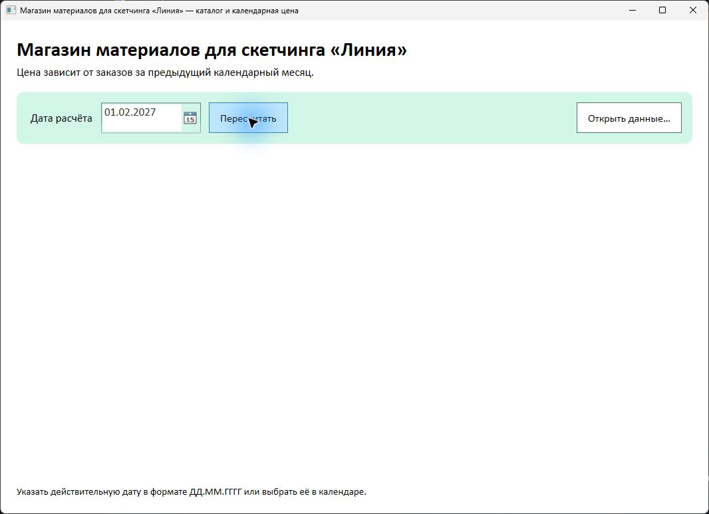
Рисунок 9 — Ошибочная дата Восстановление календарём
После неверной даты в варианте 30 повторно выбран прежний день — 15.01.2027. Каталог восстановился: первая цена 4000,00, вторая 3150,00. Названия и суммы своей области сверять по её данным.
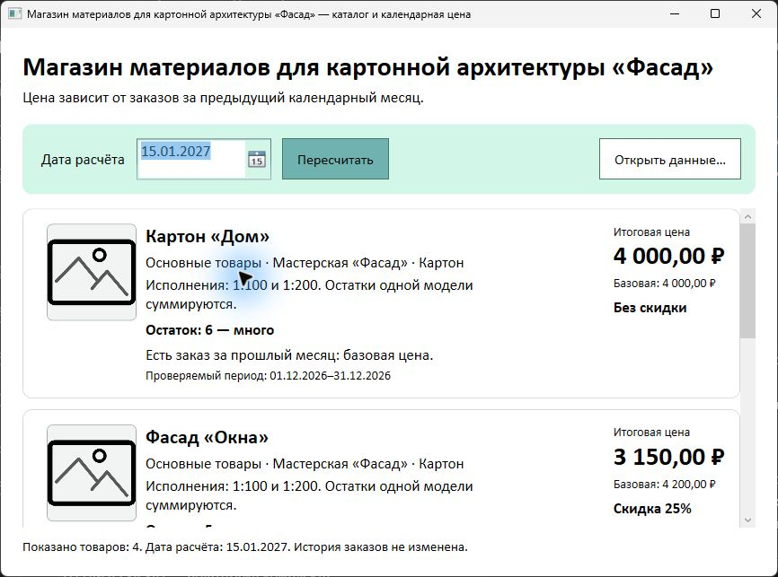
Рисунок 10 — Восстановление календарём Ошибка входных данных
Файл missing-date.json отвергнут: внизу названа отсутствующая дата; старые карточки очищены.
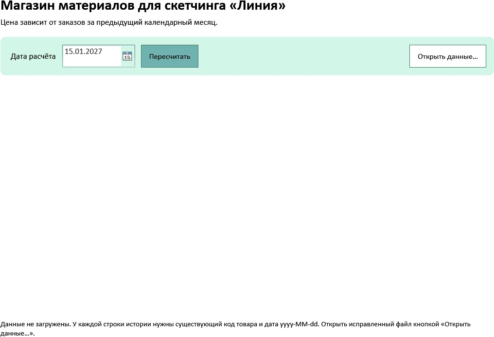
Рисунок 11 — Ошибка входных данных Восстановление своего варианта
После отказа открыт исправный catalog.json варианта 07: заголовок «Синий лист», четыре собственных товара, первая цена 1700,00 на 15.01.2027. Другой вариант сверять по его JSON.
Рисунок 12 — Восстановление своего варианта Високосный случай
Собственный leap.json варианта 07: период 01.02.2028–29.02.2028. Первая модель без скидки, у второй — скидка.
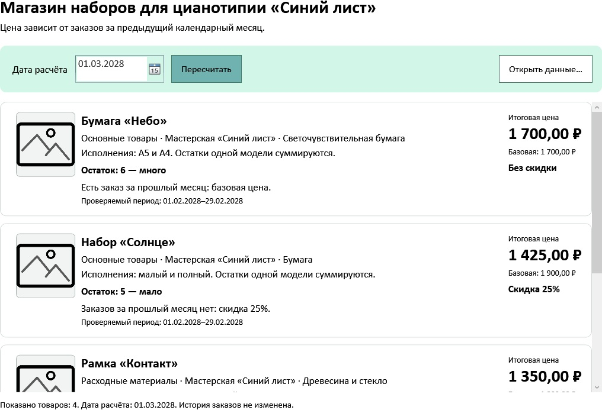
Рисунок 13 — Високосный случай Пустая история
Собственный empty-history.json варианта 07: все товары со скидкой, первая цена 1275,00. Вернуть исходный JSON и дважды пересчитать; исходные суммы должны повториться.
Рисунок 14 — Пустая история Остановка и пошаговая проверка
Закрыть каталог. В Visual Studio открыть Pricing.cs и найти в Calculate строку var (start, end) = PreviousMonth(asOf). Щёлкнуть слева от неё на сером поле: появится красная точка. Нажать F5. Жёлтая строка показывает место остановки до выполнения команды. Нажать F10 два раза; внизу открыть «Локальные» (если вкладка скрыта: «Отладка → Окна → Локальные»). Проверить productId, asOf, start, end и hasOrders. Ещё два F10 вычислят factor и price. Для v07 на 15.01.2027 у первой модели start=01.12.2026, end=01.01.2027, hasOrders=true, factor=1 и price=1700. Для своей модели брать её код и цену. Нажать красную точку слева ещё раз, затем F5: окно продолжит работу. Если значения отличаются, исправить соответствующий метод и повторить тот же случай.
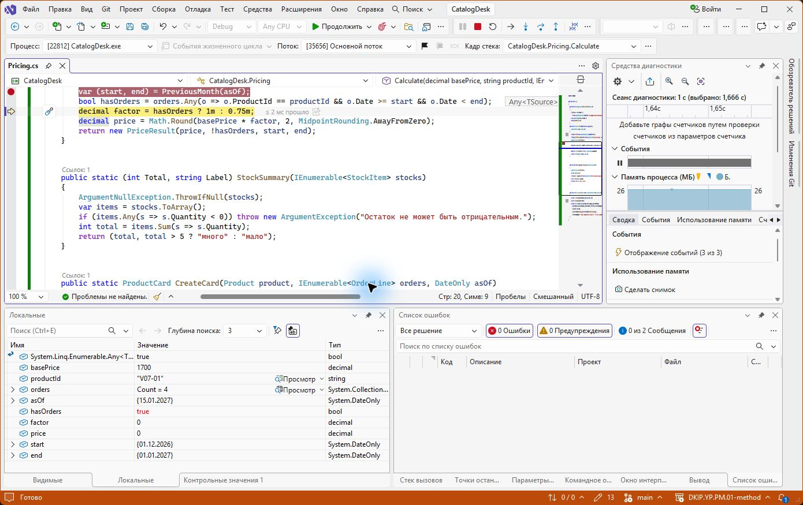
Рисунок 15 — Остановка и пошаговая проверка
3.10. Подготовить передачу и сдачу
Сохранить исходники и опубликовать проект
Создать .gitignore в корне проекта с двумя строками bin/ и obj/. Если используется GitHub Desktop: File → Add local repository → выбрать папку проекта; если репозитория ещё нет, выбрать create a repository here, проверить Local path и создать. На вкладке Changes убедиться, что есть app/Pricing.cs, Data/catalog.json, Assets/picture.png и README.md, а bin/obj отсутствуют. Ввести краткое описание и нажать Commit to main, затем Publish repository. Задать имя своего проекта и доступ, позволяющий преподавателю открыть ссылку; нажать Publish. Через Repository → View on GitHub скопировать адрес и внести в раздел 3 отчёта. Открыть ссылку без своей авторизации или проверить доступ преподавателя; ссылка на главную github.com без имени проекта не подходит. Если проект уже в Git, использовать его обычный порядок Commit и Push.
Проверить комплект проекта
Закрыть окно. Открыть копию своего проекта в новой папке и выполнить сборку и запуск по README. Проверить наличие Data/catalog.json и Assets/picture.png. Описать в README Windows, SDK, путь проекта, команды запуска и назначение Pricing.cs. Удалять собственные исходники ради чистой сборки не требуется.
Передать программный модуль
Включить Pricing.cs и Models.cs в сдаваемый проект. Указать Calculate(basePrice, productId, orders, asOf), StockSummary(stocks), CreateCard(product, orders, asOf). Описать цены в рублях, даты без времени, код модели и условие предыдущего календарного месяца. Пояснить вызов модуля из предоставленного окна; алгоритм хранить в Pricing.cs, без копирования в обработчик кнопки.
Оформить отчёт
Заполнить отдельную форму «Отчет о выполнении.docx». Сохранить её имя; ответы, таблицу испытаний и собственные рисунки внести в подготовленные места. Пояснительную записку из карточки сохранить как отдельный официальный документ. Поместить прямую ссылку на собственный репозиторий в текст отчёта. Заполнить tests-template.csv: ожидания определить по данным до запуска, факт записать после. Приложить схему алгоритма и настоящие снимки окна.
Проверить документы
Получить из карточки EatDoners индивидуальное задание, аттестационный лист и шаблоны отчёта и презентации. Указать собственную область, результат, границы месяца, ключевые испытания и ссылку на проект. Проверить, что ссылки открываются проверяющему, таблицы читаются, а изображённые даты и цены соответствуют данным своего варианта.
Признак готовности
Сдан один проект собственной области; он открывается отдельным окном и рассчитывает цены по выбранной дате. Проверки подтверждают обычные, ошибочные, граничные и повторные случаи. README содержит контракт модуля и порядок запуска из чистой копии.
4. Источники для углубления
Среда и проект
Microsoft. .NET 10 SDK для Windows. https://dotnet.microsoft.com/download/dotnet/10.0 (дата обращения: 03.11.2026). Microsoft Learn. MSBuild properties for Microsoft.NET.Sdk.Desktop. https://learn.microsoft.com/dotnet/core/project-sdk/msbuild-props-desktop (дата обращения: 03.11.2026).
Дата и деньги
Microsoft Learn. DateOnly.AddMonths. https://learn.microsoft.com/dotnet/api/system.dateonly.addmonths (дата обращения: 03.11.2026). Microsoft Learn. Math.Round. https://learn.microsoft.com/dotnet/api/system.math.round (дата обращения: 03.11.2026). Основные необходимые приёмы объяснены в этой методичке; внешние ссылки используются для углубления.